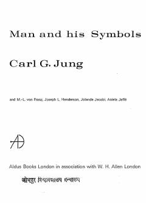

MACarl Jung va uning hammualliflari tomonidan inson ongsizligi va ramzlar olami haqida yozilgan mashhur ilmiy-ommabop kitob.
Carl G. Jung va uning hammualliflari tomonidan yozilgan ushbu kitob inson ongsizligi, tushlar va ramzlarning sir-asrorlarini keng kitobxonlar ommasiga tushunarli tilda ochib beradi. Mualliflar ongsiz dunyo va uning kundalik hayotimizga ta'sirini ilmiy-ommabop tarzda tushuntirib berishadi. Asar muallifning hayotining so'nggi yillarida yozilgan bo'lib, uning asosiy g'oyalarini o'z ichiga oladi.